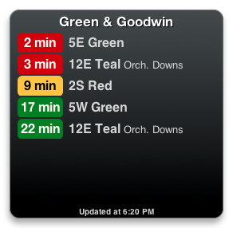
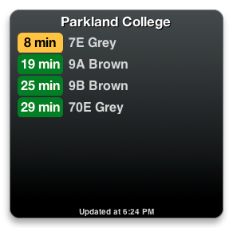
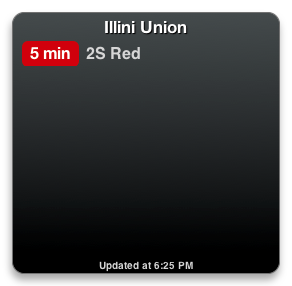
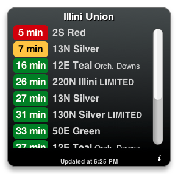

CU Buses
A slick Dashboard widget to tell you when your bus is coming.
What’s this?
- 


- 
- 
- 
CU Buses is a small application that tells you when buses will be arriving at a certain stop on the Champaign–Urbana Mass Transit District (CUMTD) bus system. CU Buses runs in Dashboard, which is part of Mac OS X—you’ll need a Mac to use this widget.
Installation
Download the widget from this page, and double-click on the “CU Buses.wdgt” file that appears in your downloads folder. You will be taken to the Dashboard, and you’ll see the back of the CU Buses widget. Click the “Keep” button and enter the four-digit CUMTD text message code for the stop you’d like to monitor. Click “Done” and you’re all set!
If you’d like, you can also tell CU Buses to show only certain bus routes. From the preferences screen, click “Choose…” and uncheck the boxes for any routes you don’t want to see. (In this screen several MTD routes may be covered under one checkbox—for example, checking the “1 Yellow” box will show you information for the 1N and 1S Yellow, the 1N and 1S YellowHopper, the 100N and 100S Yellow Evening, and so on.)
Tips
- You can return to CU Buses’ preferences screen by clicking on the “i” button that appears when you move your cursor over the widget.
- Since you’ll probably want to monitor a couple of stops at a time, you can have multiple copies of CU Buses in your Dashboard. While in Dashboard, press the white “+” button in the lower-left corner of the screen and drag the CU Buses icon out into your Dashboard. You can have as many copies of the widget as you’d like.
- If you hold your cursor over a route name, a tooltip will appear showing that route’s destination.
- The widget will automatically check for new versions. Flip to the back of the widget periodically to see whether a new version is available—a green “Get the newest version” button will be visible.
Download
The newest version, 1.5, was released on August 10, 2011.
Version history
- Version 1.6 ()
- Route names are now all displayed in full (instead of being truncated with “…”).
- Version 1.5 (August 10, 2011)
- You can now pick and choose which routes you’d like to see.
- Data is now refetched from the server immediately whenever the preferences are changed.
- Made the code more robust and easier to maintain.
- Version 1.0 (July 25, 2011)
- The first public release of CU Buses.
About
CU Buses is developed by Benjamin Esham; please e-mail him with any questions, comments, or bug reports. Development is hosted on GitHub—feel free to fork the project and to open a pull request if you make any exciting changes.
The widget is developed using Apple’s Dashcode, and is made possible by the CUMTD API. Thanks to the CUMTD for offering this great service!
Except for any portions of the project which may be the property of Apple, all files in the CU Buses project are released under the following version of the MIT license, which can also be found as “LICENSE.md” within the project’s source tree. (In short, this widget is completely free to use, and you may modify its source code however you’d like, subject to a couple of conditions.)
License
Copyright © 2011 by Benjamin Esham (www.bdesham.info).
Permission is hereby granted, free of charge, to any person obtaining a copy of this software and associated documentation files (the “Software”), to deal in the Software without restriction, including without limitation the rights to use, copy, modify, merge, publish, distribute, sublicense, and/or sell copies of the Software, and to permit persons to whom the Software is furnished to do so, subject to the following conditions:
The above copyright notice and this permission notice shall be included in all copies or substantial portions of the Software.
The CUMTD API key (the value stored within the “api_key” variable in the file “main.js”) is tied to and usable only by Benjamin Esham, the original creator of this software. Anyone who modifies this software for any reason must obtain his or her own separate API key.
The software is provided “as is”, without warranty of any kind, express or implied, including but not limited to the warranties of merchantability, fitness for a particular purpose and noninfringement. In no event shall the authors or copyright holders be liable for any claim, damages or other liability, whether in an action of contract, tort or otherwise, arising from, out of or in connection with the software or the use or other dealings in the software.